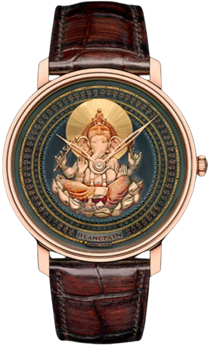
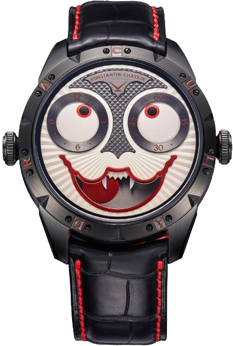
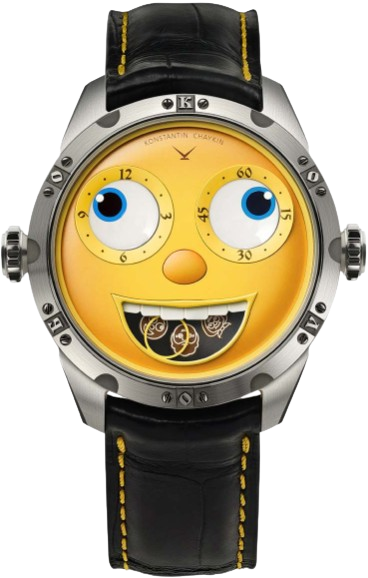
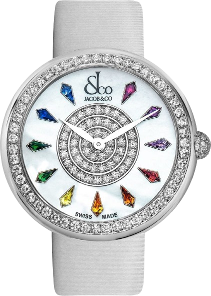

Baselworld this year, we saw two really remarkable unique pieces from Blancpain's Métiers d'Art workshops. These watches were made to show off the Japanese craft of working with an alloy known as shakudō, which is a mixture of gold and copper that traditionally was used for sword fittings, such as the tsuba (handguard) and menuki (a decorative element found on the grip). Shakudō was generally used only on smaller metal objects, due to the cost of the gold in the alloy, and it can be combined with a compound known as rokusho, which includes copper acetates, chlorides, and sulfates, to produce a wide range of decorative patinas.

Konstantin Chaykin
Brand: KonstantinModel: DRACULA Price: $34,500
Once again the Joker watch has shown its incredible ability to reincarnate, the ability it has possessed from its birth. Dracula is not simply the new face of the Joker watch design - a new caliber, equipped with a more complicated version of the original indication module, has been specially developed for it. Dracula's fangs are in fact a night indicator.

Konstantin Chaykin
Brand: KonstantinModel: MINION
Price: $14,800
Konstantin Chaykin calibre K07-3 automatic winding ETA 2892.A2 base with in-house developed module on top 29 jewels (21 for the base movement, 8 for the module) 61 module components 28,800vph 42h power reserve hours, minutes and moon phase indicated by discs

Jacob & Co
Brand: Jacob & CoModel: Brilliant
Price: $71,90,000
The Brilliant collection houses some of the most intricate and awe-worthy designs, like Brilliant Pavé and Brilliant Baguette models. They are extraordinary timepieces completely enveloped in precious stones and diamonds, from the pebble-shaped case to the dial. And taking the magical feminity of these watches forward is the Brilliant Mystery line-up. It brings forward a unique construction where a gemstone-covered island sits in the middle of a ring-shaped case, which is also adorned with diamonds.

Rolex
Brand: RolexModel: Submariner
Price: $43,000
Launched in 1953, the Rolex Submariner is the first divers’ wristwatch to be waterproof to a depth of 100 metres (330 feet) – now 300 metres (1,000 feet). Its major features, such as the graduated rotatable bezel, the luminescent display, the large hands and hour markers, have been a driving force in the creation of the long line of Rolex divers’ watches which followed. The Submariner is an iconic timepiece whose renown now extends beyond the professional world it was first designed for. The Submariner, the ultimate standard.